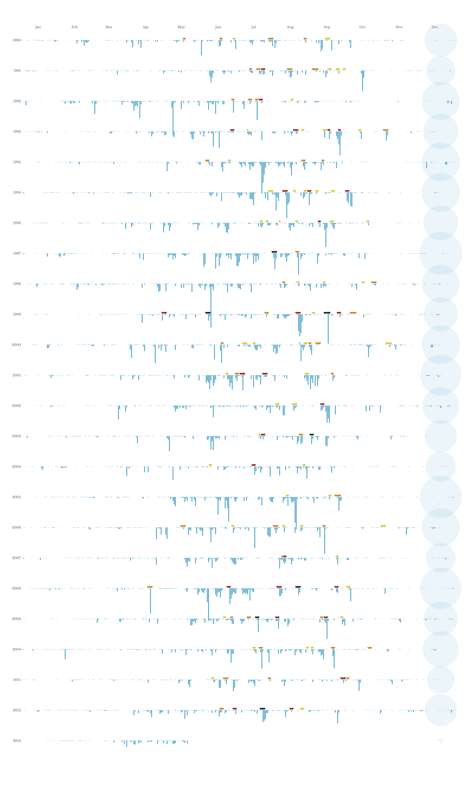
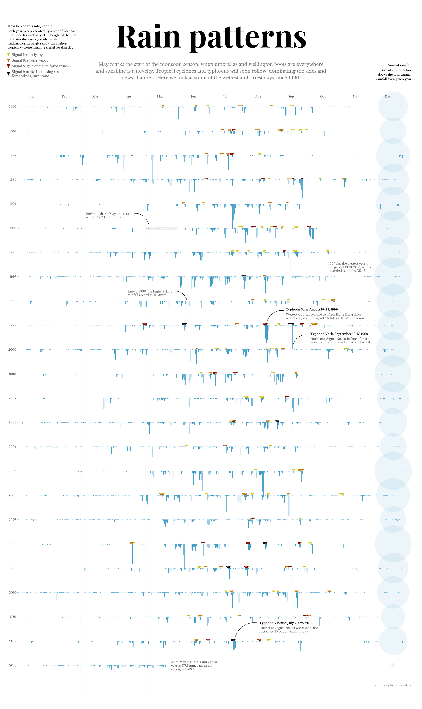
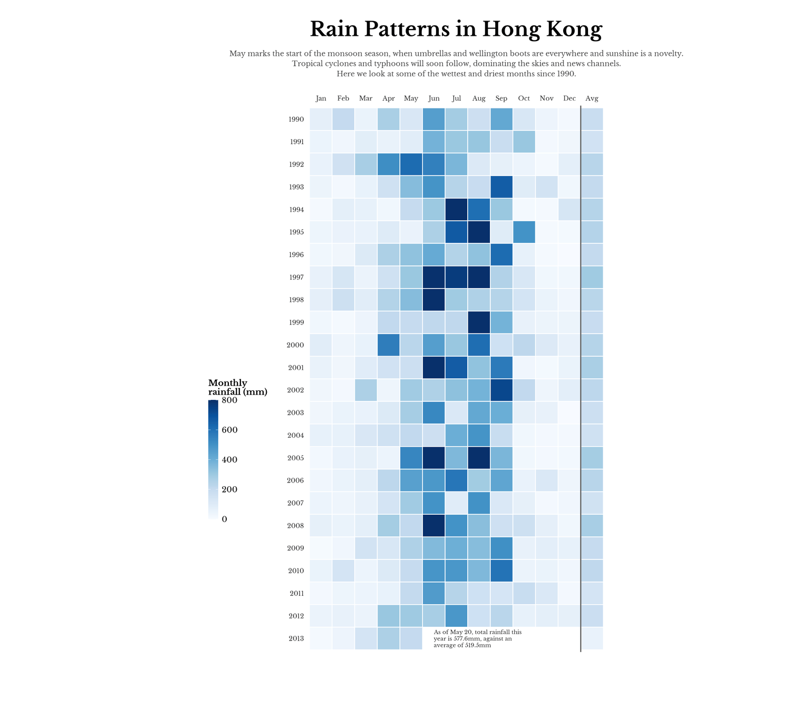
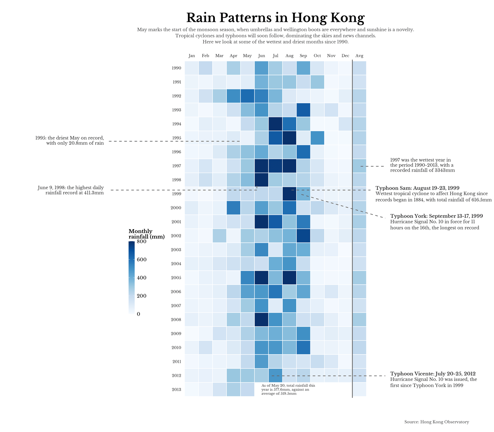

Introduction
May marks the start of the monsoon season in Hong Kong, when umbrellas and wellington boots are everywhere and sunshine is a novelty. This project replicates and tries to improve a visualization originally published by the South China Morning Post in May 2013, which displays daily rainfall patterns in Hong Kong from 1990 to 2013.
The original info graphic, created by Jane Pong, represents each year as a horizontal row where vertical lines “fall” downward like rain, with their length proportional to the ammount of rainfall that day (in millimetres). Triangles indicate typhoon warning signals, and circles at the end of each row show the total annual rainfall. The visualization also includes detailed annotations highlighting notable weather events, such as record-breaking typhoons and extreme rainfall days.
I selected this chart because I found it visually appealing and conceptually interesting: the metaphor of rain “falling” from each year’s baseline creates an immediate, intuitive connection between the data and the phenomenon it represents.
Additionally, the chart presented a significant technical challenge to replicate using ggplot2, as it combines multiple layers of information (daily rainfall, typhoon signals, annual totals, and annotations) in a cohesive and aesthetically refined design.

First steps
Load libraries
library(tidyverse)
library(showtext)
library(sysfonts) # to match typography of the original chart
library(cowplot) # to add annotations and legends outside the main plot area
invisible(Sys.setlocale("LC_TIME", "C"))
font_add_google("Playfair Display", "playfair")
font_add_google("Libre Baskerville", "baskerville")
showtext_auto(enable = TRUE)Load and prepare data
The data comes from the Hong Kong Observatory and contains daily rainfall measurements. A second dataset includes typhoon warning signals issued during the same period.
The rainfall data is filtered to include only the years 1990-2013, matching the original visualization. For 2013, data is limited to May 20th, as shown in the original chart. The “Trace” values (rainfall below 0.05mm) are converted to a small numeric value to make them visible in the plot, matching the appearance in the original graphic.
rainfall_data <- rainfall_data |>
filter(Year >= 1990 & Year <= 2013) |>
filter(!(Year == 2013 & (Month > 5 | (Month == 5 & Day > 20)))) |>
mutate(
Date = as.Date(paste(Year, Month, Day, sep = "-")),
Value_num = case_when(
Value == "Trace" ~ 2.5,
TRUE ~ as.numeric(Value)
)
)
typhoon_data <- typhoon_data |>
filter(!(Year == 2013 & Month > 5))Replication
Data transformation
A key step for this visualization is normalizing dates so that all years align on the same horizontal axis. By converting each date to a common base year (2000), January 1st of any year will appear at the same x-position, allowing direct visual comparison across years.
The “rainfall scale” parameter controls how much the rainfall lines “fall” vertically. Since the y-axis represents years, this factor converts millimeters of rain into y-axis units A value of 0.0035 means that approximately 285mm of rain would extend one full year downward. This value was calibrated through trial and error to match the visual proportions of the original chart, where the heaviest rainfall days (around 400mm) extend beyond the next year’s baseline.
plot_data <- rainfall_data |>
mutate(
date_normalized = as.Date(paste0("2000-",
sprintf("%02d", Month), "-",
sprintf("%02d", Day))),
year_position = as.numeric(as.character(Year)),
rainfall_mm = as.numeric(as.character(Value_num))
)
rainfall_scale <- 0.0035Annual rainfall calculation
The original chart displays circles at the end of each year row, with their size proportional to the total annual rainfall. This provides a quick visual comparison of wet versus dry years.
Typhoon signals preparation
Typhoon warning signals in Hong Kong range from Signal 1 (standby) to Signal 10 (hurricane). Each signal level is assigned a specific color following the original chart’s design: yellow for Signal 1, orange for Signal 3, red for Signal 8, and black for Signal 9 or 10. Using “imagecolorpicker.com” I use the same colors as in the original graph.
typhoon_viz <- typhoon_data |>
mutate(
date_normalized = as.Date(paste0("2000-",
sprintf("%02d", Month), "-",
sprintf("%02d", Day))),
year_position = as.numeric(Year),
triangle_color = case_when(
Signal == 1 ~ "#d4c20f",
Signal == 3 ~ "#c37802",
Signal == 8 ~ "#8a1002",
Signal >= 9 ~ "#000000",
TRUE ~ "#d4c20f"
)
)Building the base plot
The base plot is constructed using ggplot2 with multiple layers. The rainfall data is visualized using “geom_linerange()”, where each vertical line starts at the year’s baseline and extends downward proportionally to the rainfall amount. The x-axis shows months (January to December), while the y-axis shows years in reverse order (1990 at the top, 2013 at the bottom).
p_base <- ggplot(plot_data, aes(x = date_normalized, y = year_position)) +
# Expand plot area at the bottom
geom_blank(
data = data.frame(
date_normalized = as.Date("2000-06-15"),
year_position = max(plot_data$year_position) + 1
)
) +
# Rainfall lines
geom_linerange(
aes(
ymin = year_position,
ymax = year_position + (rainfall_mm * rainfall_scale)
),
color = "#49a1ca",
linewidth = 3,
alpha = 1
) +
# Vertical month separator lines
geom_vline(
xintercept = as.Date(paste0("2000-", 1:12, "-01")),
color = "gray90",
linewidth = 0.45,
alpha = 0.2
) +
# Typhoon triangles
geom_point(
data = typhoon_viz,
aes(x = date_normalized, y = year_position - 0.05, fill = triangle_color),
shape = 25,
color = "white",
size = 6.5,
stroke = 0.6
) +
scale_fill_identity() +
# Annual rainfall circles
geom_point(
data = annual_rainfall,
aes(x = date_normalized, y = year_position, size = circle_size),
shape = 21,
fill = "#49a1ca",
color = "#49a1ca",
alpha = 0.1,
stroke = 0.8
) +
scale_size_continuous(range = c(15, 155), guide = "none") +
scale_x_date(
breaks = as.Date(paste0("2000-", 1:12, "-15")),
labels = c("Jan", "Feb", "Mar", "Apr", "May", "Jun",
"Jul", "Aug", "Sep", "Oct", "Nov", "Dec"),
limits = as.Date(c("2000-01-01", "2000-12-31")),
expand = c(0, 0),
position = "top"
) +
scale_y_continuous(
breaks = seq(1990, 2013, 1),
expand = c(0.015, 0.015),
trans = "reverse"
) +
coord_cartesian(clip = "off") +
theme_minimal() +
theme(
plot.background = element_rect(fill = "white", color = NA),
panel.background = element_rect(fill = "white", color = NA),
panel.grid.major.x = element_blank(),
panel.grid.minor.x = element_blank(),
panel.grid.major.y = element_blank(),
panel.grid.minor.y = element_blank(),
axis.text.x.top = element_text(
size = 26,
color = "gray40",
hjust = 0.5,
margin = margin(b = -15),
family = "baskerville"
),
axis.ticks.length.x.top = unit(0, "pt"),
axis.text.x.bottom = element_blank(),
axis.text.y = element_text(
size = 26,
color = "gray40",
hjust = 1,
margin = margin(r = 15),
family = "baskerville"
),
axis.title = element_blank(),
axis.ticks = element_blank(),
plot.margin = margin(200, 150, 90, 90),
plot.title = element_text(
size = 268,
face = "bold",
color = "black",
family = "playfair",
hjust = 0.5,
margin = margin(b = 45, t = 25)
),
plot.subtitle = element_text(
size = 39,
face = "plain",
color = "gray50",
family = "baskerville",
hjust = 0.5,
lineheight = 1.25,
margin = margin(t = 85, b = 140)
)
)
print(p_base)
Adding annotations
The original chart includes several annotations highlighting notable weather events. These annotations use curved lines to point to specific data points and provide context about record-breaking rainfall days, typhoons, and other significant events.
p_annotated <- p_base +
# 1995: Driest May on record
annotate(
"rect",
xmin = as.Date("2000-05-01"), xmax = as.Date("2000-05-31"),
ymin = 1994.95, ymax = 1995.1,
fill = "gray70", alpha = 0.2
) +
annotate(
"curve",
x = as.Date("2000-05-04"), xend = as.Date("2000-04-20"),
y = 1994.85, yend = 1994.4,
color = "gray10", linewidth = 1.5,
curvature = -0.4
) +
annotate(
"text",
x = as.Date("2000-03-06"), y = 1994.6,
label = "1995: the driest May on record,\nwith only 20.8mm of rain",
hjust = 0, vjust = 0,
family = "baskerville", size = 9, color = "gray40",
lineheight = 1
) +
# 1997: Wettest year
annotate(
"text",
x = as.Date("2000-10-20"), y = 1996.8,
label = "1997 was the wettest year in\nthe period 1990-2013, with a\nrecorded rainfall of 3343mm",
hjust = 0, vjust = 0,
family = "baskerville", size = 9, color = "gray40",
lineheight = 1
) +
# 1998: Highest daily rainfall
annotate(
"curve",
x = as.Date("2000-06-09"), xend = as.Date("2000-05-27"),
y = 1997.98, yend = 1997.6,
color = "gray10", linewidth = 1.5,
curvature = -0.4
) +
annotate(
"text",
x = as.Date("2000-04-14"), y = 1997.8,
label = "June 9, 1998: the highest daily\nrainfall record at 411.3mm",
hjust = 0, vjust = 0,
family = "baskerville", size = 9, color = "gray40",
lineheight = 1
) +
# 1999: Typhoon Sam
annotate(
"curve",
x = as.Date("2000-08-23"), xend = as.Date("2000-09-08"),
y = 1998.9, yend = 1998.4,
color = "gray10", linewidth = 1.5,
curvature = 0.4
) +
annotate(
"text",
x = as.Date("2000-09-10"), y = 1998.4,
label = "Typhoon Sam: August 19-23, 1999",
hjust = 0, vjust = 0,
family = "baskerville", size = 9, color = "gray10",
fontface = "bold"
) +
annotate(
"text",
x = as.Date("2000-09-10"), y = 1998.75,
label = "Wettest tropical cyclone to affect Hong Kong since\nrecords began in 1884, with total rainfall of 616.5mm",
hjust = 0, vjust = 0,
family = "baskerville", size = 9, color = "gray40",
lineheight = 1
) +
# 1999: Typhoon York
annotate(
"curve",
x = as.Date("2000-09-17"), xend = as.Date("2000-10-01"),
y = 1999.8, yend = 1999.4,
color = "gray10", linewidth = 1.5,
curvature = 0.4
) +
annotate(
"text",
x = as.Date("2000-10-03"), y = 1999.4,
label = "Typhoon York: September 13-17, 1999",
hjust = 0, vjust = 0,
family = "baskerville", size = 9, color = "gray10",
fontface = "bold"
) +
annotate(
"text",
x = as.Date("2000-10-03"), y = 1999.75,
label = "Hurricane Signal No. 10 in force for 11\nhours on the 16th, the longest on record",
hjust = 0, vjust = 0,
family = "baskerville", size = 9, color = "gray40",
lineheight = 1
) +
# 2012: Typhoon Vicente
annotate(
"curve",
x = as.Date("2000-07-24"), xend = as.Date("2000-08-14"),
y = 2011.9, yend = 2011.25,
color = "gray10", linewidth = 1.5,
curvature = 0.4
) +
annotate(
"text",
x = as.Date("2000-08-16"), y = 2011.3,
label = "Typhoon Vicente: July 20-25, 2012",
hjust = 0, vjust = 0,
family = "baskerville", size = 9, color = "gray10",
fontface = "bold"
) +
annotate(
"text",
x = as.Date("2000-08-16"), y = 2011.65,
label = "Hurricane Signal No. 10 was issued, the\nfirst since Typhoon York in 1999",
hjust = 0, vjust = 0,
family = "baskerville", size = 9, color = "gray40",
lineheight = 1
) +
# 2013: May total rainfall
annotate(
"text",
x = as.Date("2000-05-25"), y = 2013.2,
label = "As of May 20, total rainfall this\nyear is 577.6mm, against an\naverage of 519.5mm",
hjust = 0, vjust = 0,
family = "baskerville", size = 9, color = "gray40",
lineheight = 1
) +
# Source at the bottom right
annotate(
"text",
x = as.Date("2000-12-01"), y = 2013.85,
label = "Source: Hong Kong Observatory",
hjust = 0, vjust = 0,
family = "baskerville", size = 7, color = "gray40"
) +
labs(
title = "Rain patterns",
subtitle = "May marks the start of the monsoon season, when umbrellas and wellington boots are everywhere\nand sunshine is a novelty. Tropical cyclones and typhoons will soon follow, dominating the skies and\nnews channels. Here we look at some of the wettest and driest days since 1990."
)
print(p_annotated)
Adding legends with cowplot
The original chart includes two legend sections: one on the left explaining how to read the infographic and the typhoon signal colors, and one on the right explaining the annual rainfall circles. These elements are positioned outside the main plot area using cowplot’s “ggdraw()” and “drawlabel()” functions. For the typhoon signal legend, Unicode triangle characters (▼) provide a simple way to display colored symbols without creating additional plot elements. These characters can be copied from websites like unicode-table.com.
final_plot <- ggdraw(p_annotated) +
# ----- LEFT LEGEND -----
# Title "How to read this infographic"
draw_label(
"How to read this infographic",
x = 0.018, y = 0.965,
hjust = 0, vjust = 1,
fontface = "bold",
fontfamily = "baskerville",
size = 26,
color = "black"
) +
# Descriptive text
draw_label(
"Each year is represented by a row of vertical\nlines, one for each day. The height of the line\nindicates the average daily rainfall in\nmillimetres. Triangles show the highest\ntropical cyclone warning signal for that day",
x = 0.018, y = 0.958,
hjust = 0, vjust = 1,
fontfamily = "baskerville",
size = 26,
color = "black",
lineheight = 1.15
) +
# Yellow triangle + Signal 1 text
draw_label(
"▼",
x = 0.020, y = 0.923,
hjust = 0.5, vjust = 0.5,
size = 74,
color = "#d4c20f"
) +
draw_label(
"Signal 1: standy-by",
x = 0.028, y = 0.923,
hjust = 0, vjust = 0.5,
fontfamily = "baskerville",
size = 28,
color = "gray40"
) +
# Orange triangle + Signal 3 text
draw_label(
"▼",
x = 0.020, y = 0.915,
hjust = 0.5, vjust = 0.5,
size = 74,
color = "#c37802"
) +
draw_label(
"Signal 3: strong winds",
x = 0.028, y = 0.915,
hjust = 0, vjust = 0.5,
fontfamily = "baskerville",
size = 28,
color = "gray40"
) +
# Red triangle + Signal 8 text
draw_label(
"▼",
x = 0.020, y = 0.907,
hjust = 0.5, vjust = 0.5,
size = 74,
color = "#8a1002"
) +
draw_label(
"Signal 8: gale or storm force winds",
x = 0.028, y = 0.907,
hjust = 0, vjust = 0.5,
fontfamily = "baskerville",
size = 28,
color = "gray40"
) +
# Black triangle + Signal 9/10 text
draw_label(
"▼",
x = 0.020, y = 0.896,
hjust = 0.5, vjust = 0.5,
size = 74,
color = "#000000"
) +
draw_label(
"Signal 9 or 10: increasing strong\nforce winds, hurricane",
x = 0.028, y = 0.896,
hjust = 0, vjust = 0.5,
fontfamily = "baskerville",
size = 28,
color = "gray40",
lineheight = 1.1
) +
# ----- RIGHT LEGEND (Annual rainfall) -----
draw_label(
"Annual rainfall",
x = 0.975, y = 0.910,
hjust = 1, vjust = 1,
fontface = "bold",
fontfamily = "baskerville",
size = 26,
color = "black"
) +
draw_label(
"Size of circles below\nshows the total annual\nrainfall for a given year",
x = 0.975, y = 0.903,
hjust = 1, vjust = 1,
fontfamily = "baskerville",
size = 26,
color = "black",
lineheight = 1.25
)
print(final_plot)
Improvement
Motivation
The originally visualization, while visually striking, has a significant drawback: it requires a lot of vertical space. The chart becomes quite tall, making it difficult to view on a single screen and challenging to compare patterns across distant years.
For the improvement part, my goal was trying to find the best way to visualize the same data in a more compact format. The idea was to maintain the main information while reducing the space of the visualization.
I developed an alternative approach using a monthly heatmap. This design condenses the 24 years of daily data into a compact grid where each cell represents one month’s total rainfall, allowing for easier identification of seasonal patterns and year-to-year variations at a glance.
Data preparation for heatmap
For the heatmap visualization, the data is aggregated by month rather than displayed daily. An additional column represents the annual average (displayed as monthly equivalent by dividing by 12) to mantain comparibility across the visualization.
monthly_sum <- rainfall_data |>
group_by(Year, Month) |>
summarise(
total_rainfall = sum(Value_num, na.rm = TRUE),
.groups = "drop"
)
annual_sum <- rainfall_data |>
group_by(Year) |>
summarise(
total_rainfall = sum(Value_num, na.rm = TRUE),
.groups = "drop"
) |>
mutate(Month = 13)
heatmap_data <- bind_rows(monthly_sum, annual_sum) |>
mutate(
Month = factor(Month, levels = 1:13,
labels = c("Jan", "Feb", "Mar", "Apr", "May", "Jun",
"Jul", "Aug", "Sep", "Oct", "Nov", "Dec", "Avg")),
is_annual = Month == "Avg",
display_value = ifelse(is_annual, total_rainfall / 12, total_rainfall)
)Building the heatmap
The heatmap uses a sequential blue color scale, where darker blues indicate higher rainfall. A vertical line separates the monthly data from the annual average column on the right. The color scale is capped at 800mm to prevent extreme values from washing out the variation in typical months.
p_heatmap <- ggplot(heatmap_data, aes(x = Month, y = factor(Year),
fill = display_value)) +
geom_tile(color = "white", linewidth = 0.5) +
geom_vline(xintercept = 12.5, color = "gray40", linewidth = 0.8) +
scale_fill_gradientn(
colors = c("#f7fbff", "#deebf7", "#c6dbef", "#9ecae1",
"#6baed6", "#4292c6", "#2171b5", "#08519c", "#08306b"),
na.value = "#f0f0f0",
name = "Monthly\nrainfall (mm)",
limits = c(0, 800),
oob = scales::squish
) +
scale_y_discrete(limits = rev(as.character(1990:2013))) +
scale_x_discrete(position = "top") +
coord_fixed(ratio = 1, clip = "off") +
theme_minimal() +
theme(
text = element_text(family = "baskerville"),
plot.title = element_text(size = 28, face = "bold", hjust = 0.5),
plot.subtitle = element_text(size = 10, color = "gray30", hjust = 0.5,
lineheight = 1.2, margin = margin(b = 25, t = 8)),
axis.text.x.top = element_text(size = 9, color = "gray20"),
axis.text.y = element_text(size = 9, color = "gray20"),
axis.title = element_blank(),
axis.ticks = element_blank(),
panel.grid = element_blank(),
legend.position = "left",
legend.direction = "vertical",
legend.box.margin = margin(t = 0, r = 10, b = -200, l = 0),
legend.title = element_text(size = 12, face = "bold"),
legend.text = element_text(size = 11),
legend.key.height = unit(1.2, "cm"),
legend.key.width = unit(0.5, "cm"),
plot.margin = margin(t = 30, r = 150, b = 80, l = 150)
) +
annotate(
"text",
x = 6, y = "2013",
label = "As of May 20, total rainfall this\nyear is 577.6mm, against an\naverage of 519.5mm",
hjust = 0, vjust = 0.5,
family = "baskerville", size = 2.75, color = "gray20",
lineheight = 1
) +
labs(
title = "Rain Patterns in Hong Kong",
subtitle = "May marks the start of the monsoon season, when umbrellas and wellington boots are everywhere and sunshine is a novelty.\nTropical cyclones and typhoons will soon follow, dominating the skies and news channels.\nHere we look at some of the wettest and driest months since 1990."
)
print(p_heatmap)
Adding annotations to the heatnmap
To mantain the annotations of the original visualization, the improved version includes the same key annotations about notable weather events. These are positioned using cowplot’s drawing functions, with dashed lines connecting the annotations to their corresponding cells in the heatmap.
final_heatmap <- ggdraw(p_heatmap) +
# 1995 May annotation (left)
draw_line(
x = c(0.485, 0.22),
y = c(0.673, 0.673),
color = "gray40", size = 0.7, linetype = "dashed"
) +
draw_label(
"1995: the driest May on record,\nwith only 20.8mm of rain",
x = 0.21, y = 0.675,
hjust = 1, vjust = 0.5,
fontfamily = "baskerville",
size = 10,
color = "gray20",
lineheight = 1
) +
# 1997 annotation (right)
draw_line(
x = c(0.73, 0.78),
y = c(0.615, 0.615),
color = "gray40", size = 0.7, linetype = "dashed"
) +
draw_label(
"1997 was the wettest year in\nthe period 1990-2013, with a\nrecorded rainfall of 3343mm",
x = 0.79, y = 0.618,
hjust = 0, vjust = 0.5,
fontfamily = "baskerville",
size = 10,
color = "gray20",
lineheight = 1
) +
# June 1998 annotation (left)
draw_line(
x = c(0.520, 0.520),
y = c(0.570, 0.56),
color = "gray40", size = 0.7, linetype = "dashed"
) +
draw_line(
x = c(0.520, 0.22),
y = c(0.56, 0.56),
color = "gray40", size = 0.7, linetype = "dashed"
) +
draw_label(
"June 9, 1998: the highest daily\nrainfall record at 411.3mm",
x = 0.21, y = 0.56,
hjust = 1, vjust = 0.5,
fontfamily = "baskerville",
size = 10,
color = "gray20",
lineheight = 1
) +
# Typhoon Sam 1999 (right)
draw_line(
x = c(0.59, 0.75),
y = c(0.560, 0.560),
color = "gray40", size = 0.7, linetype = "dashed"
) +
draw_label(
"Typhoon Sam: August 19-23, 1999",
x = 0.76, y = 0.565,
hjust = 0, vjust = 0.5,
fontfamily = "baskerville",
size = 11,
fontface = "bold",
color = "gray20"
) +
draw_label(
"Wettest tropical cyclone to affect Hong Kong since\nrecords began in 1884, with total rainfall of 616.5mm",
x = 0.76, y = 0.545,
hjust = 0, vjust = 0.5,
fontfamily = "baskerville",
size = 10,
color = "gray20",
lineheight = 1.2
) +
# Typhoon York 1999 (right)
draw_line(
x = c(0.61, 0.78),
y = c(0.550, 0.495),
color = "gray40", size = 0.7, linetype = "dashed"
) +
draw_label(
"Typhoon York: September 13-17, 1999",
x = 0.79, y = 0.500,
hjust = 0, vjust = 0.5,
fontfamily = "baskerville",
size = 11,
fontface = "bold",
color = "gray20"
) +
draw_label(
"Hurricane Signal No. 10 in force for 11\nhours on the 16th, the longest on record",
x = 0.79, y = 0.480,
hjust = 0, vjust = 0.5,
fontfamily = "baskerville",
size = 10,
color = "gray20",
lineheight = 1.2
) +
# Typhoon Vicente 2012 (right)
draw_line(
x = c(0.55, 0.78),
y = c(0.130, 0.130),
color = "gray40", size = 0.7, linetype = "dashed"
) +
draw_label(
"Typhoon Vicente: July 20-25, 2012",
x = 0.79, y = 0.135,
hjust = 0, vjust = 0.5,
fontfamily = "baskerville",
size = 11,
fontface = "bold",
color = "gray20"
) +
draw_label(
"Hurricane Signal No. 10 was issued, the\nfirst since Typhoon York in 1999",
x = 0.79, y = 0.115,
hjust = 0, vjust = 0.5,
fontfamily = "baskerville",
size = 10,
color = "gray20",
lineheight = 1.2
) +
# Source
draw_label(
"Source: Hong Kong Observatory",
x = 0.95, y = 0.02,
hjust = 1, vjust = 0,
fontfamily = "baskerville",
size = 9,
color = "gray30"
)
print(final_heatmap)
Conclusion
The heatmap improvement addresses the original chart’s main limitation (its vertical length) by condensing 24 years of data into a more compact grid. While this approach loses the daily detail and the “falling rain” metaphor, it gains significant advantages in terms of quick pattern recognition and year to year comparison. The monsoon season (May-September) is immediately visible as a darker band across all years.